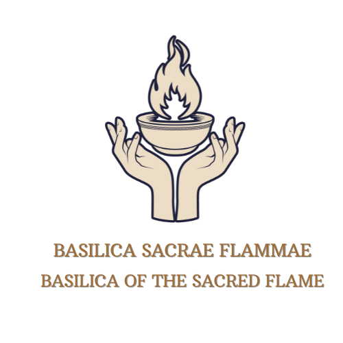

Human Coalition and Basilica
Two organised human groups who oppose the supernatural world. One fights with words and the other with fire.
Lines without a tag are settled canon from the Earth reference documents. Tags mark anything less settled. Nok spellings follow the current reference documents.
The Human Coalition
The Coalition presents itself as reasonable. It never admits the supernatural exists. It speaks of “dangerous fringe groups,” “predatory cults” and “threats to ordinary families,” and that language has worked very well.
Where it came from
- People of Christ. A Reconstruction-era Christian group, inspired by the young Ku Klux Klan, which excluded non-white people for a long time. Decided
- Light of Humanity. Its successor: violent and badly organised. It carried out the 1970 raid.
- The Human Coalition. The rebrand after the 1970s, built from the remains of the Light and of other small anti-supernatural groups. It learned from the Light’s failures and became a movement that sounds reasonable.
- Members. Mostly newer Emsehurst residents, particularly people of Christian and other Abrahamic faiths together with secular atheists who share a distrust of what they call “fringe religious extremism.” In their view that covers both the Zingans and the Witches of Mephis. The two camps are held together by shared hostility, not shared belief.
- Public face. Deliberately faceless. Its online voice runs through one persona, and by the later books its posts have the cultural reach of the most influential political figures of the social-media age.
- Its dealings with witches. Some members buy enchanted items or fortifying spells from the very Witches the movement condemns.
- The 1970 raid. The most violent act in its history. It eliminated the Somerhalder presence in Emsehurst, whose seat has been vacant since, and killed two members of the Gilbert family. No human institution has formally acknowledged it. It is the wound at the centre of the supernatural community’s relationship with organised human hostility.
The Basilica Sacrae Flammae
The Sacred Flame Basilica calls itself a brother to the Coalition, with the same aims and different methods. The Coalition makes war with information, and the Basilica makes the other kind. Its members are mostly practising Catholics who treat the supernatural as a theological enemy instead of a social phenomenon. They hunt, and what they call purification ceremonies are executions.
- Leadership. None is known. It works like a leaderless militia, with regional cells and loud voices and nobody signing at the top.
- Look. Catholic imagery throughout: vestments, candles, Latin incantations and the vocabulary of crusade and inquisition. Its members are sincere believers, not costumes.
- The Church. The Catholic Church neither sanctions nor joins it. The Basilica found a theology already written and treated the Inquisition as a model, not a warning.
- Reach. At least six American cities. In Emsehurst it is a constant pressure that needs steady coordination between the Sekh, the Anu and their allies.
Abilities
Neither group has any supernatural ability from its beliefs. Members have the usual human weaknesses.
Named individuals in both groups are left to the character material. Decided
Emblems
